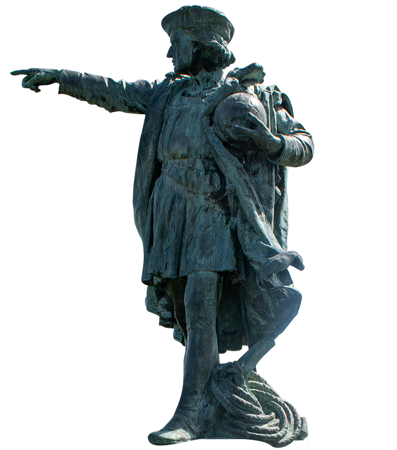

AN EMPTY
PEDESTAL
IS AN INVITATION

During the summer of 2020, the city of Providence removed a statue of Christopher Columbus from the Elmwood neighborhood. The statue, located in Providence since 1893, has been vandalized for over a decade – people condemn the statue’s presence for celebrating and honoring genocide. After flyers circulated within the neighborhood calling for its removal in the wake of George Floyd protests, the city deployed 100 police officers to ensure the statue was preserved. Days later the city removes the statue, and people within the neighborhood gather to cheer. The removal of a colonial figure, like Columbus, is cause to celebrate, right?

Christopher Columbus Statue in Memorial Park, Johnston, Rhode Island. Photo by Avrie Allen
After being removed from its location in Reservoir Square, formerly Columbus Square, Providence kept the Columbus statue in storage for 3 years before it was donated to the city of Johnston, Rhode Island and unveiled on Columbus Day in 2023. The Columbus statue now sits within Johnston’s Memorial Park. The park honors veterans, displays large U.S. military weapons, and promotes narratives of American exceptionalism. The statue has an iron fence around its perimeter, and is under constant surveillance via a security camera several meters away. The community is on defense.
On Columbus Day 2023, the morning of Johnston’s unveiling of the statue and Columbus Day celebration, residents wake up to find white nationalist propaganda in their driveways. A New England organization places flyers inside of ziplock bags with rocks to keep them from flying away. The flyers read “New Englanders you are being replaced. Organize and resist” and feature an illustration of a man with a rifle.
At the event, Johnston’s mayor declares that “there are always going to be people who want to take our history away from us… we’re not going to let them do that.” Columbus’s violent acts are excused away through claims that they were just the norms of the time. News coverage of the morning reports altercations between residents and two Italian-American protesters. The attendees call the protesters communists, and reference woke ideology, Donald Trump, and supporting Israel. The Johnston residents in attendance position themselves in relation to these current events, within an ongoing culture war, and treat the statue of something to be safeguarded, as a symbolic stand-in for culture that needs to be protected.
Clash between attendees and protesters at Christopher Columbus Day celebration in Johnston, Rhode Island.

Surveillance camera beside the statue at Memorial Park. Photo by Avrie Allen.

Bag filled with rocks and white nationalist propaganda left on Elmwood residents' driveways on Columbus Day 2023.
While Johnston is empowered around the myth of Columbus as a heroic explorer, Elmwood is disempowered to protest Columbus’s genocidal and colonial legacy. By removing the statue and renaming the square in Elmwood, the city has neutralized an ongoing protest; one that extends beyond Columbus, condemning the persistence of colonialism and racism in one of Providence’s most diverse neighborhoods. The absence of genocidal figures in public space is the bare minimum, but the removal in this instance is more complex. This is depoliticization in one context – where protest is neutralized by bureaucratic gestures – and right-wing politicization in another. In Johnston, the statue has become a rallying call, not only for Italian-American remembrance, but, as exemplified with the white nationalist flyers, within a cultural narrative of a broader defense of whiteness, nationalism, and reactionary politics. These two sites raise questions: whose narratives are protected? Who is disempowered? Who can politicize Columbus? To what ends?